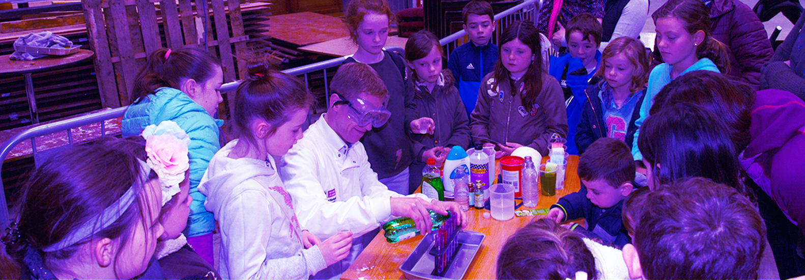

Product Research & Development
Exploring longer horizon vision through design-lead experiments and collaborations with third party partners
Overview
The Open Knowledge Movement is a radical act of social innovation. In fact, innovation, experimentation and improvisation have consistently resulted in disruptive and pragmatic solutions to core problems the Movement and the platform have faced from the beginning. As a result, these instincts are already built into our culture, and deeply inform the approach our teams take in addressing day-to-day challenges. But in order to meet 2030 goals, Wikimedia must build upon its historical success as an experimental platform and focus more intentionally on the emergent needs, challenges and opportunities that fall outside and beyond the current product roadmap. By clearly identifying strategic questions that frame our path forward it will be possible to develop more innovative program, product and technical interventions - ones that can serve the community of contributors, delight end users and de-risk future product development.
Studies
-
Long Tail Topic & Influence Ontology
This experiment explores methodologies for analyzing a content corpus to programatically derive a picture of topical coverage, and volume of content for any given wiki project. And then, to map this ontology to the key contributors for each topical area. The goal of this work is to provide a method for visualizing and comparing topical coverage from one wiki project to another for the purpose of better understanding where knowledge gaps and subject matter expertise exist across the Free Knowledge Movement. -
Trusted: Signals, Inferences & Indicators
In this collaboration between CMU and the Wikimedia Foundation, researchers are analyzing which types of cues work best to help readers understand the true quality of an article. They will then scrape talk pages for the signals and inferences that can drive these cues. -
Decision-making & Influence
The Wikimedia Foundation has recently started a collaboration with CITP to map the different types of group decision-making required to manage and improve a crowd-sourced content platform like Wikipedia, and to begin to understand the community of free knowledge contributors and organizers as discrete special interest groups with unique social dynamics.